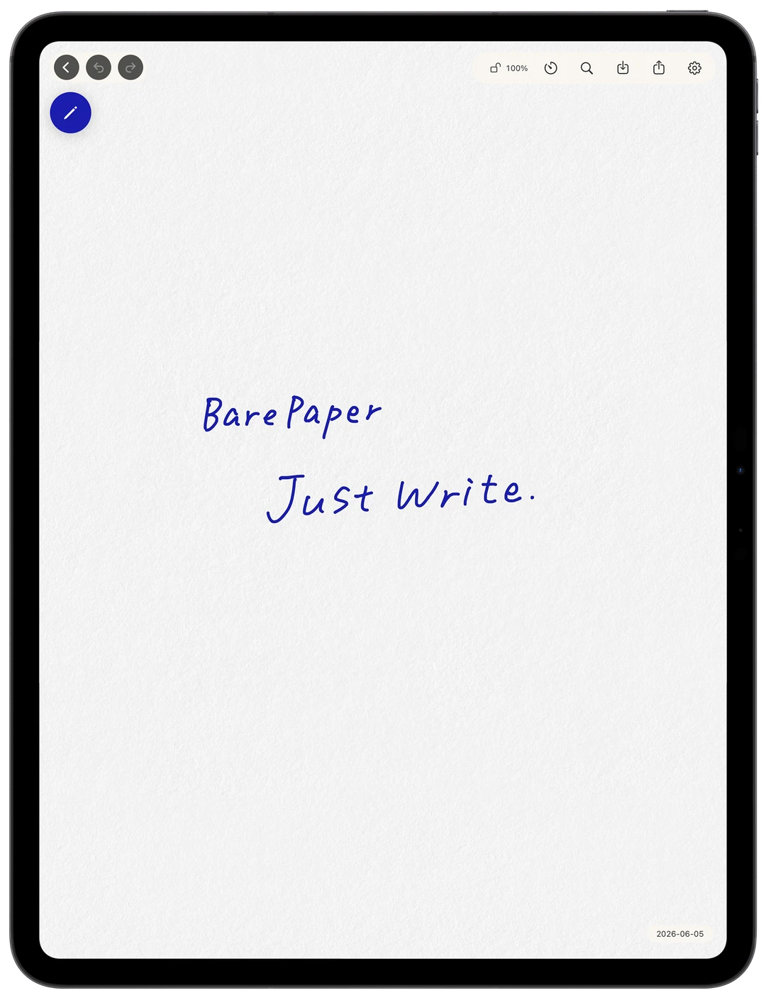
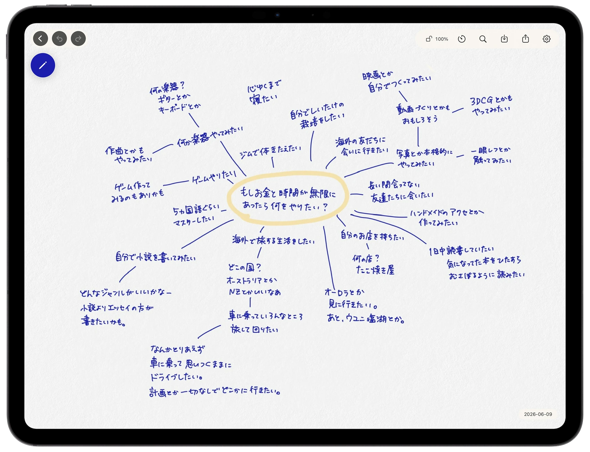
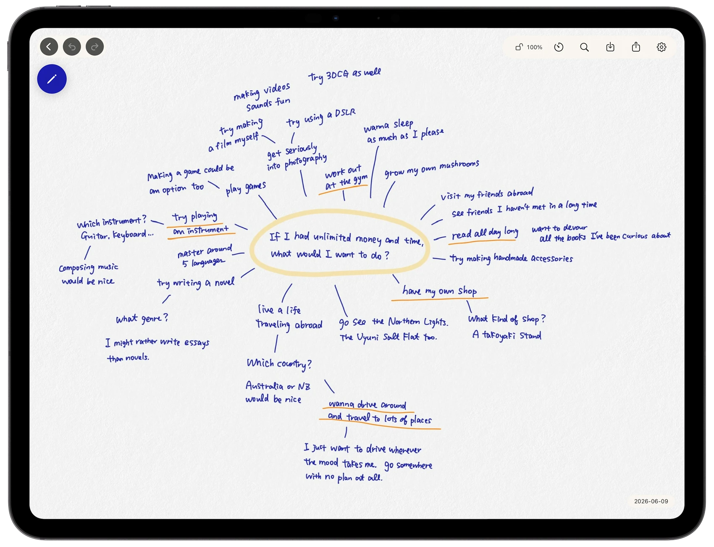

素の自分を発見するMeet your unfiltered self
整えたりよく見せたりする必要のない場所で、全てをさらけ出した時、自分でも知らなかった本音や感情がぽろっと出てきます。No one's reading. Nothing needs to look good. When you stop editing yourself, feelings you didn't know you had find their way onto the page.
iPadのための静かな手書きスペースA quiet handwriting space for iPad
書くことで、自分を見つけ、アイデアを生む。
そのための特別なスペース。Find what you really think. Watch ideas take shape.
BarePaper is the space built for that kind of writing.

BarePaperは、「考える」に集中できるiPad用手書きアプリです。
紙のような書き心地、区切られないキャンバス、シンプルな画面。思考を制限・邪魔する要素を削ぎ落とし、書くことだけが残ったとき、自分の中に埋もれていたものが、はじめて姿を見せはじめます。
BarePaperは、そういうスペースとして作られました。
BarePaper is a handwriting app for iPad with one job: thinking.
It feels like paper. The canvas never ends. The screen stays out of your way. When everything that interrupts your thinking is stripped away and only writing is left, the things you've kept buried start to surface.
That's the space BarePaper was built to be.
整えたりよく見せたりする必要のない場所で、全てをさらけ出した時、自分でも知らなかった本音や感情がぽろっと出てきます。No one's reading. Nothing needs to look good. When you stop editing yourself, feelings you didn't know you had find their way onto the page.
思いついたものを、その隣に、その下に、どんどん書き足せる。スペースの制約がないからこそ、ばらばらだった発想が一つの流れになっていきます。Add a thought beside a thought, under a thought, anywhere. With no edges and no pages to turn, scattered notes start to become one line of thinking.
書きながら考えるから、まだ自分の中になかったはずのものが、形になって出てきます。書くことは、思考のフィルターを通すのではなく、思考そのものを生み出す行為です。You think as you write — so things that weren't in your head yet show up on the page. Writing doesn't just record thought. It creates it.
紙テクスチャ背景に、シンプルなストローク。書く集中を邪魔する装飾は、最初から入れていません。A paper-textured background and clean, simple strokes. Nothing decorative ever made it in — by design.
余計な機能は入れていません。書くことだけに集中できる時間を、BarePaperは大事にしています。No toolbars full of features you'll never use. Your writing time stays yours.
スペースの制約は思考の制約。思考の流れを止めないために、どこまでも書き続けられるキャンバスを用意しました。A border is a limit on thinking. The canvas keeps going as long as your thoughts do.
決めた時間だけ書くことに没頭できる、控えめなタイマー。「書く瞑想」のための小さな機能です。Set a time, sink in, and write until it gently lets you know. A small feature for treating writing like meditation.
書いたものはPDFで書き出せます。自分の好きな場所に、いつでも保管できます。Export your pages as PDFs and keep them anywhere you like.


邪魔されず書ける、あなただけの思考空間Room to hear yourself think.
1つのキャンバスを試せる。
まずは「書く」感触をたしかめてください。Try one canvas.
See how writing here feels.
キャンバス無制限・PDF出力。
一度買えば、追加料金はありません。Unlimited canvases and PDF export.
Pay once. That's it.
サブスクではありません。一度買って、ずっと開く場所として残せます。No subscriptions. You buy it once, and it's a place you keep.
書けば見つかる、
あなただけの答え。さあ、はじめよう。
What you're looking for is already in you.Start writing.